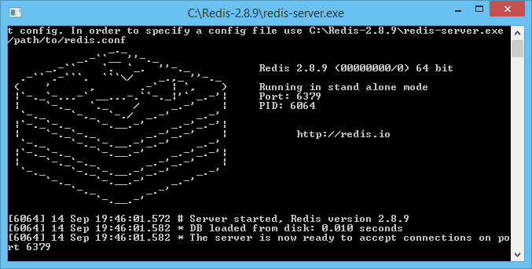

ASP.NET WebApi - Use Redis as CacheManager
This article walks you through configuration Redis and made basic operations using .net C# client.
Redis is one of the fastest and feature-rich key-value stores to come from the NoSQL movement. It is similar to memcached but the dataset is not volatile, and values can either be strings lists, sets, sorted sets or hashes.
You can download the Redis Client in any one of the following ways:
- Packaged by default in ServiceStack.dll
- Available to download separately as a stand-alone ServiceStack.Redis.dll
- As Source Code via Git: git clone git://github.com/ServiceStack/ServiceStack.Redis.git
- For those interested in having a GUI admin tool to visualize your Redis data should check out the Redis Admin UI
STEP 1 - Create ASP.NET WebAPI 2 Application
I will be using Visual Studio 2013 as my development environment. Our first step will be to create an ASP.NET Web Application project based on the Web API template.
- Open Visual Studio 2013 and create a new project of type ASP.NET Web Application.
- On this project I create a solution called WebAPI.

- Press OK, and a new screen will appear, with several options of template to use on our project.
- Select the option WebAPI.

- The solution will be created.
STEP 2 - Install Nuget
Now in order to use Redis as CacheManager we need to install a Nuget package.
So on the Visual Studio 2013, select the follow menu option:
Tools-> Library Package manager -> Manage NuGet Packages for Solution
Search for Redis and select the option Install.

This option, will install automatically the Nuget Package.
STEP 3 - Start Redis
First download the latest .exe package from here http://code.msdn.microsoft.com/ASPNET-WebApi-Use-Redis-as-a0d942a3/https://github.com/rgl/redis/downloads (choose the appropriate latest 32 or 64 bit version).
Run the redis-server.exe executable file. This will start redis in command line.
As you see the redis is now running on port 6379 on local machine.

STEP 4 - Create CacheManager class
using Newtonsoft.Json; using ServiceStack.Redis; using ServiceStack.Redis.Generic; using System; using System.Collections.Generic; using System.Linq; using System.Linq.Expressions; using System.Reflection; using System.Web; namespace WebApi2.Manager { public class CacheManager { private readonly IRedisClient _redisClient; public CacheManager(IRedisClient redisClient) { _redisClient = redisClient; } public T Get<T>(string id) { using (var typedclient = _redisClient.GetTypedClient<T>()) { return typedclient.GetById(id.ToLower()); } } public IQueryable<T> GetAll<T>() { using (var typedclient = _redisClient.GetTypedClient<T>()) { return typedclient.GetAll().AsQueryable(); } } public IQueryable<T> GetAll<T>(string hash, string value, Expression<Func<T, bool>> filter) { var filtered = _redisClient.GetAllEntriesFromHash(hash).Where(c => c.Value.Equals(value, StringComparison.InvariantCultureIgnoreCase)); var ids = filtered.Select(c => c.Key); var ret = _redisClient.As<T>().GetByIds(ids).AsQueryable() .Where(filter); return ret; } public IQueryable<T> GetAll<T>(string hash, string value) { var filtered = _redisClient.GetAllEntriesFromHash(hash).Where(c => c.Value.Equals(value, StringComparison.InvariantCultureIgnoreCase)); var ids = filtered.Select(c => c.Key); var ret = _redisClient.As<T>().GetByIds(ids).AsQueryable(); return ret; } public void Set<T>(T item) { using (var typedclient = _redisClient.GetTypedClient<T>()) { typedclient.Store(item); } } public void Set<T>(T item, string hash, string value, string keyName) { Type t = item.GetType(); PropertyInfo prop = t.GetProperty(keyName); _redisClient.SetEntryInHash(hash, prop.GetValue(item).ToString(), value.ToLower()); _redisClient.As<T>().Store(item); } public void Set<T>(T item, List<string> hash, List<string> value, string keyName) { Type t = item.GetType(); PropertyInfo prop = t.GetProperty(keyName); for (int i = 0; i < hash.Count; i++) { _redisClient.SetEntryInHash(hash[i], prop.GetValue(item).ToString(), value[i].ToLower()); } _redisClient.As<T>().Store(item); } public void SetAll<T>(List<T> listItems) { using (var typedclient = _redisClient.GetTypedClient<T>()) { typedclient.StoreAll(listItems); } } public void SetAll<T>(List<T> list, string hash, string value, string keyName) { foreach (var item in list) { Type t = item.GetType(); PropertyInfo prop = t.GetProperty(keyName); _redisClient.SetEntryInHash(hash, prop.GetValue(item).ToString(), value.ToLower()); _redisClient.As<T>().StoreAll(list); } } public void SetAll<T>(List<T> list, List<string> hash, List<string> value, string keyName) { foreach (var item in list) { Type t = item.GetType(); PropertyInfo prop = t.GetProperty(keyName); for (int i = 0; i < hash.Count; i++) { _redisClient.SetEntryInHash(hash[i], prop.GetValue(item).ToString(), value[i].ToLower()); } _redisClient.As<T>().StoreAll(list); } } public void Delete<T>(T item) { using (var typedclient = _redisClient.GetTypedClient<T>()) { typedclient.Delete(item); } } public void DeleteAll<T>(T item) { using (var typedclient = _redisClient.GetTypedClient<T>()) { typedclient.DeleteAll(); } } public long PublishMessage(string channel, object item) { var ret = _redisClient.PublishMessage(channel, JsonConvert.SerializeObject(item)); return ret; } } }
using Newtonsoft.Json; using ServiceStack.Redis; using ServiceStack.Redis.Generic; using System; using System.Collections.Generic; using System.Linq; using System.Linq.Expressions; using System.Reflection; using System.Web; namespace WebApi2.Manager { public class CacheManager { private readonly IRedisClient _redisClient; public CacheManager(IRedisClient redisClient) { _redisClient = redisClient; } public T Get<T>(string id) { using (var typedclient = _redisClient.GetTypedClient<T>()) { return typedclient.GetById(id.ToLower()); } } public IQueryable<T> GetAll<T>() { using (var typedclient = _redisClient.GetTypedClient<T>()) { return typedclient.GetAll().AsQueryable(); } } public IQueryable<T> GetAll<T>(string hash, string value, Expression<Func<T, bool>> filter) { var filtered = _redisClient.GetAllEntriesFromHash(hash).Where(c => c.Value.Equals(value, StringComparison.InvariantCultureIgnoreCase)); var ids = filtered.Select(c => c.Key); var ret = _redisClient.As<T>().GetByIds(ids).AsQueryable() .Where(filter); return ret; } public IQueryable<T> GetAll<T>(string hash, string value) { var filtered = _redisClient.GetAllEntriesFromHash(hash).Where(c => c.Value.Equals(value, StringComparison.InvariantCultureIgnoreCase)); var ids = filtered.Select(c => c.Key); var ret = _redisClient.As<T>().GetByIds(ids).AsQueryable(); return ret; } public void Set<T>(T item) { using (var typedclient = _redisClient.GetTypedClient<T>()) { typedclient.Store(item); } } public void Set<T>(T item, string hash, string value, string keyName) { Type t = item.GetType(); PropertyInfo prop = t.GetProperty(keyName); _redisClient.SetEntryInHash(hash, prop.GetValue(item).ToString(), value.ToLower()); _redisClient.As<T>().Store(item); } public void Set<T>(T item, List<string> hash, List<string> value, string keyName) { Type t = item.GetType(); PropertyInfo prop = t.GetProperty(keyName); for (int i = 0; i < hash.Count; i++) { _redisClient.SetEntryInHash(hash[i], prop.GetValue(item).ToString(), value[i].ToLower()); } _redisClient.As<T>().Store(item); } public void SetAll<T>(List<T> listItems) { using (var typedclient = _redisClient.GetTypedClient<T>()) { typedclient.StoreAll(listItems); } } public void SetAll<T>(List<T> list, string hash, string value, string keyName) { foreach (var item in list) { Type t = item.GetType(); PropertyInfo prop = t.GetProperty(keyName); _redisClient.SetEntryInHash(hash, prop.GetValue(item).ToString(), value.ToLower()); _redisClient.As<T>().StoreAll(list); } } public void SetAll<T>(List<T> list, List<string> hash, List<string> value, string keyName) { foreach (var item in list) { Type t = item.GetType(); PropertyInfo prop = t.GetProperty(keyName); for (int i = 0; i < hash.Count; i++) { _redisClient.SetEntryInHash(hash[i], prop.GetValue(item).ToString(), value[i].ToLower()); } _redisClient.As<T>().StoreAll(list); } } public void Delete<T>(T item) { using (var typedclient = _redisClient.GetTypedClient<T>()) { typedclient.Delete(item); } } public void DeleteAll<T>(T item) { using (var typedclient = _redisClient.GetTypedClient<T>()) { typedclient.DeleteAll(); } } public long PublishMessage(string channel, object item) { var ret = _redisClient.PublishMessage(channel, JsonConvert.SerializeObject(item)); return ret; } } }
using ServiceStack.Redis; using System; using System.Collections.Generic; using System.Linq; using System.Net; using System.Net.Http; using System.Web.Http; using WebApi2.Manager; namespace WebApi2.Controllers { public class RedisController : ApiController { // GET: api/Redis/name public int Get(string name) { RedisClient client = new RedisClient("localhost", 6379); CacheManager cacheManager = new CacheManager(client); Person person = cacheManager.Get<Person>(name); return person.Age; } // POST: api/Redis public void Post(int age, string name) { RedisClient client = new RedisClient("localhost", 6379); CacheManager cacheManager = new CacheManager(client); Person person = new Person(); person.Age = age; person.Name = name; cacheManager.Set(person); } } public class Person { public int Age { get; set; } public string Name { get; set; } } }
using ServiceStack.Redis; using System; using System.Collections.Generic; using System.Linq; using System.Net; using System.Net.Http; using System.Web.Http; using WebApi2.Manager; namespace WebApi2.Controllers { public class RedisController : ApiController { // GET: api/Redis/name public int Get(string name) { RedisClient client = new RedisClient("localhost", 6379); CacheManager cacheManager = new CacheManager(client); Person person = cacheManager.Get<Person>(name); return person.Age; } // POST: api/Redis public void Post(int age, string name) { RedisClient client = new RedisClient("localhost", 6379); CacheManager cacheManager = new CacheManager(client); Person person = new Person(); person.Age = age; person.Name = name; cacheManager.Set(person); } } public class Person { public int Age { get; set; } public string Name { get; set; } } }